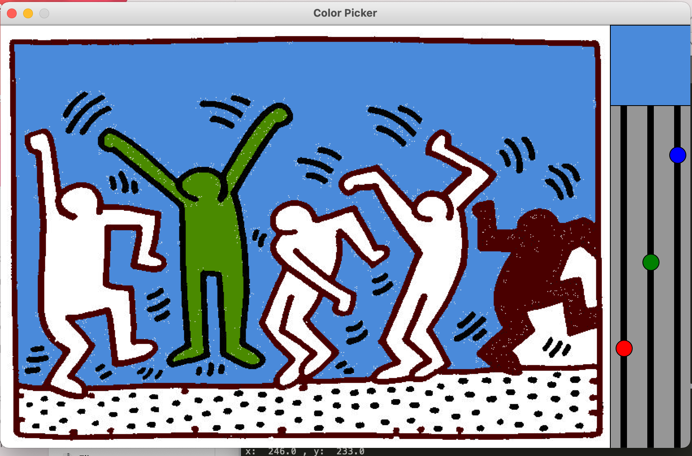

Betram Lalusha
Programmer, mathematician,and entreprenuer.
My math journey started in the 9th grade. I won't bore with minatue of how struggling with elementry level set theory inspired me to become a better mathematician, but I'll confess I hope to one day use numbers for transformative social change.
With Programming, I'm a touche a tout trying to learn it all and see where I fit in. So far, I can code in CSS, HTML, Java, python, SQL and a little C++.
Featured Projects
Here are some of my CS projects so far:
Untitled Dance -->>
Working with two others, we recreated Keith Harring's untiltled dance painting into a video game that enables the user to color the figures themselves and play music while doing it. Roles: added music to project, and helped redraw image using python zelle graphics (Screenshot to the left)
View projectHangman Game -->>
As part of a class assignemnt, I recreated the hangman game using zelle graphics
View project(Scroll to Hangman File)Work Experience
As of today, I am proud founder of an SAT prep start-up, a research assistant for the Academic resource center at Loyola Marymount University, and served as the public relations administrator for Yellow Ribbon Zambia.
Research Assistant
Loyola Marymount University
Fall 2020 to present
I research scholarships, funding, and opportunities avialable to first gen students at Loyola Marymount university
Public Relations Administrator
Yellow Ribbon Zambia
March 2020 to September 2020
As the public relations adminsitrator, I was responsible for anti-suicide outreach campagns, increasing organisation membership, and finding funding resources. During my time in this role, memberhip grew from 3 to 65 members
Other work experiences: Please view full resume
Education
Loyola Marymount University - Los Angeles
Computer Science and Mathematics Double Major, 2020-2024
GPA: 3.71 (Dean's List).
Awards: Receipiant of the Prestigious Trustee Scholarship(awarded to only 10 students annually),Presidential Scholarship receipiant, LMU Achievements award for substantial academic achiement, and books and supply award.
Campus Affiliations: Member of the university Honors program, the First To Go Scholars, and The Learning Community(TLC)Mpelembe Secondary School - Kitwe, Zambia
High School Diploma, 2012-2016
GPA: 4.0.
Awards: Valedictorian, Second Best Overall Student x3, Best Overall Student in: History(x1),Additional Mathematics(x2), Chemistry(x3), Biology(x1), Environmental Science(x1), Computer Studies(x2), Religious Education(x2), Civics(x1), Principles of Accounts(x3), Book Keeping(x1)
Campus Affiliations: Member of The Mpelembe Community Service Group. Roles included: tutoring math, physics, and chemistry